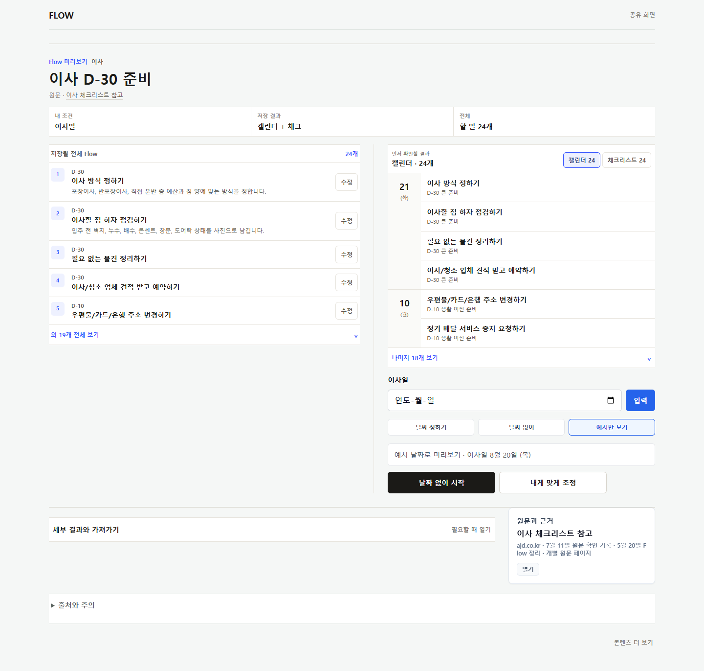
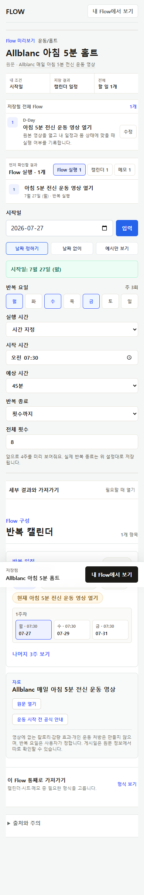
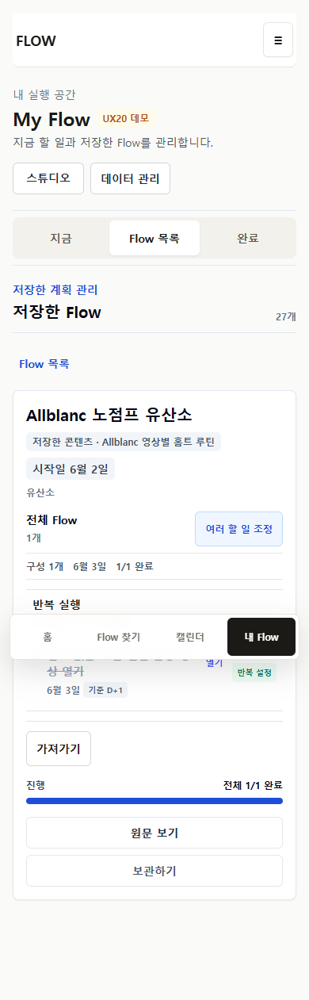
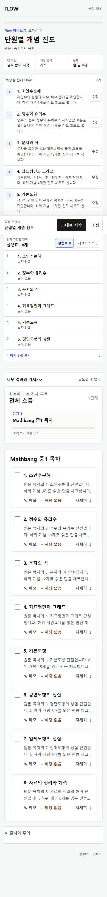

콘텐츠와 실행 사이
FlowMe는 planner를 대체하지 않고 원문을 최소 개인화해 기존 실행 도구로 연결합니다.
FLOWME · P29-00 INDEPENDENT REVIEW HANDOFF
P28은 whole Flow, 조정, routine, My Flow, Calendar, 다섯 결과 형태를 연결했습니다. 이제 구조 변화가 왜 작게 느껴지는지 확인하고, 다음 단계가 polish인지 coordinated reset인지 결정해야 합니다.
데이터 계약과 4탭 IA는 유지합니다. save-before, My Flow, Calendar, result choice의 composition, disclosure, command hierarchy를 함께 비교 설계하는 것이 현재 권장안입니다. Reviewer는 production과 source를 근거로 이 가설을 승인하거나 반박해야 합니다.
FlowMe는 planner를 대체하지 않고 원문을 최소 개인화해 기존 실행 도구로 연결합니다.
발견, 저장 전, receipt, My Flow, Calendar, export가 같은 사용자-facing object를 다룹니다.
모든 destination을 강제하지 않고 자연스러운 primary와 필요한 secondary만 보여줍니다.
source, personal overlay, run, occurrence, export identity는 visual reset 후에도 섞이지 않습니다.
outline, result, adjustment가 모두 생겼지만 비슷한 카드 무게로 세로에 누적됩니다.
compositionprogressive disclosure전용 완료 문법은 사라졌어도 빈도, 시간, duration, 종료 조건이 한 번에 보입니다.
densitystate summarylibrary/detail은 생겼지만 다음 행동, 전체 계획, 조정, export가 같은 무게로 보일 수 있습니다.
action hierarchyreturning user가로 chip 대신 picker를 썼지만 large library scope와 selected-day work가 분리돼 있습니다.
scopeselected dayactual rows는 맞지만 추천 이유, 결과 변경 손실, 저장 후 receipt가 한 경험으로 이어지지 않습니다.
result choicereceiptcard, border, label을 반복하면서 같은 Flow의 상태가 surface마다 다른 도구처럼 느껴질 수 있습니다.
visual continuityshared anatomy






| 대안 | 바꾸는 것 | 좋은 점 | 남는 위험 | 현재 판단 |
|---|---|---|---|---|
| A. Incremental polish | 색, 글자, 간격, border | 빠르고 회귀가 작음 | interaction hierarchy가 그대로 | 단독으로 부족 |
| B. Coordinated reset | 주요 surface의 composition, disclosure, command hierarchy | 체감 변화와 계약 보존의 균형 | 비교 prototype과 단계 구현 필요 | 우선 검토 |
| C. Full rewrite | IA, data, planner까지 재작성 | 표면상 큰 변화 | 제품 범위와 신뢰 계약 붕괴 | 비권장 |
current/proposed mobile and wide wireframe, A/B/C 결정
visual token보다 먼저 task row, command hierarchy, state anatomy 고정
전체 확인, 결과 선택, 최소 조정의 reading order 재구성
library와 실행 detail을 action-first로 재구성
scope, selected day, unscheduled placement의 역할 분리
summary-first 설정과 occurrence 실행 문법 고정
primary/secondary result, 손실 안내, receipt 연결
390/1024/1440, accessibility, regression, independent review